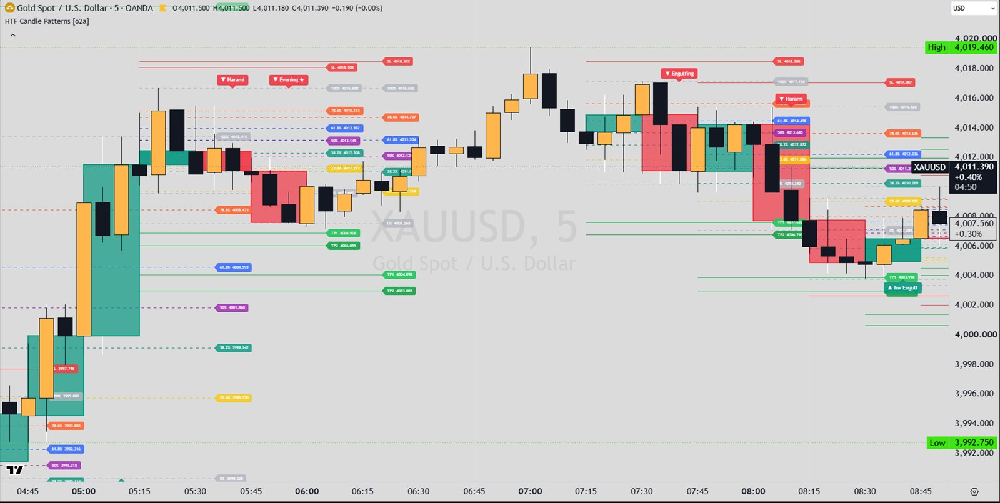

Indicators / HTF Candle Patterns
Price action · HTFHTF Candle Patterns
Detects two-candle engulfing and inverse engulfing patterns on a higher timeframe (default 15 minutes) and displays them on the current chart. Each pattern type has its own liquidity-grab filter, optional size filter and, for the inverse type, a choice of which candle sets the direction. A Forex / no-gap mode relaxes body comparisons for markets where each candle opens at the previous close. Only the engulfing part of the source was available; the full indicator also contains other pattern families listed below.

What it draws
- Unclear from the extract (drawing code was removed). Input tooltips in the extract say the original draws the HTF candles (not when 'Use Current Timeframe' is on), pattern labels and Fib levels; the extract README also lists SL/TP levels.
Signals
- ▲ Engulfing (bullish)
- C1 = the older of the last two closed HTF candles, C2 = the newer. C1 bearish, C2 bullish, C2 body top above C1 body top and C2 body bottom below C1 body bottom (with Forex / No-Gap mode on, the bottom may be equal). A candle with close = open counts as bullish.
- ▼ Engulfing (bearish)
- C1 bullish, C2 bearish, C2 body bottom below C1 body bottom and C2 body top above C1 body top (with Forex mode on, the top may be equal).
- Engulfing filters
- Engulfing Filter: Any; Liq Grab (bull needs C2 low below C1 low, bear needs C2 high above C1 high); No Liq Grab (the opposite). Optional size filter: C2 at least N times C1 (N = 4) by body, high-low range, or both.
- ▲ / ▼ Inv Engulf (inverse engulfing)
- C1 body contains C2 body (strictly inside; with Forex mode both edges may be equal). Direction by 'Second Candle' (default): bull = C1 bearish and C2 bullish, bear = C1 bullish and C2 bearish. Direction by 'First Candle': bull when C1 is bullish, bear when C1 is bearish, any C2 colour.
- Inverse engulfing filters
- Inv Filter: Any; Liq Grab (bull: C2 low below C1 low; bear: C2 high above C1 high); No Liq Grab (C2's whole range inside C1). Optional size filter: C1 at least N times C2 (N = 4) by body, range, or both.
- Priority
- If several match on the same candle: bull engulfing, then bear engulfing, then bull inverse, then bear inverse. In the full indicator, 2-bar patterns are only checked when no 3-bar pattern fired on that candle.
Main settings
| Setting | Default | What it does |
|---|---|---|
| Timeframe | 15 | Higher timeframe on which patterns are detected. |
| Use Current Timeframe | off | Detect on the chart timeframe instead (HTF candles are then not drawn). |
| Forex / No-Gap Mode | on | Relaxes strict body comparisons to allow equal edges, for 24h markets where open = previous close. |
| Engulfing ▲▼ | on | Enables regular engulfing. |
| Engulfing Filter | Any | Any, Liq Grab or No Liq Grab. |
| Enable Size Filter / Size Measure / Min Size Ratio (N) | off / Body / 4.0 | Requires the engulfing candle to be N times the engulfed one. |
| Inverse Engulfing ▲▼ | on | Enables inverse engulfing (big first candle, small second candle inside it). |
| Inv Filter | Any | Any, Liq Grab or No Liq Grab for the inverse type. |
| Direction by (inverse) | Second Candle | Which candle sets the inverse-engulfing direction. |
| Inverse Enable Size Filter / Size Measure / Min Size Ratio (N) | off / Body / 4.0 | Requires the first candle to be N times the second. |
Timeframes
Higher timeframe input (default 15 minutes) or the current chart timeframe; patterns are displayed on the chart timeframe.
Alerts
The extract README says alerts exist in the original but were removed from the extract; which conditions they cover is unclear.
Closed candles and repainting
- HTF data is requested with request.security on [1] values with lookahead_on, so it uses only closed HTF candles.
- Detection runs once when a new HTF candle starts (or on each closed chart bar in current-timeframe mode), so a pattern appears on the first chart bar after the second candle closes.